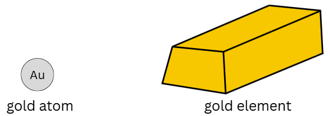
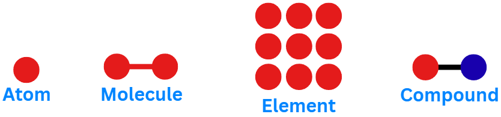
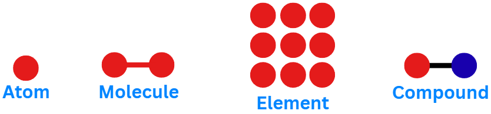

Observations
Observations can be qualitative or quantitative.
- QUALITATIVE: Does not include numbers. Use your senses.
- The solution is green.
- The liquid is hot.
- QUANTITATIVE: Uses numbers
- The block weighs 19 g.
- The liquid is 100°C.
- INTERPRETATION: A conclusion or explanation based on evidence (observations).
Example: colour, smell, texture
Example: density, mass, temperature
Types of Scientific Explanations or Statements
- HYPOTHESIS:
- An educated guess that is based on observations.
- An unproven assumption that attempts to explain the results of an experiment.
- Often written as an "if...then..." statement.
- THEORY:
- Explains how and why things work.
- Developed from one or more hypotheses.
- Is not "proven" but it is supported by many experiments and observations.
- LAW:
- Tells you what happens but doesn't explain why.
- Usually written as a formula or rule.
- Based on repeated experiments and observations.
Properties
-
CHEMICAL PROPERTY
- Substances undergoing chemical change into new substances.
-
PHYSICAL PROPERTY
- observing and describing a substance without changing what the substance is.
A physical property is either intensive or extensive.
-
EXTENSIVE PHYSICAL PROPERTY
- Does depend on the amount of substance.
- Example: mass, volume, length, total energy, duration, shape.
-
INTENSIVE PHYSICAL PROPERTY
- Does not depend on the amount of substance.
- Example: density, colour, boiling point (BP), melting point (MP), hardness, lustre, concentration, conductivity, viscosity, solubility, malleability, etc.
-
- Hardness is how well a solid can resist indentation or scratching.
- Lustre is how a solid surface reflects light.
- Viscosity is the resistance of a fluid to flow. High viscosity = flows slower.
- Solubility is how well something dissolves.
- Malleability is how well something can be bent or shaped into thin sheets.
Definitions
MATTER:
- Anything that has mass and occupies space (has volume).
- If it is not matter, it is energy.
ATOM:
- The smallest possible building block of matter that still keeps the identity of an element.
- Everything around you is made of atoms.
ELEMENT:
- Made of only one type of atom.
- Cannot be separated into any simpler substances by any chemical process.
- Can be one atom, many of the same atom bonded, or many of the same atom grouped together to form something larger
MOLECULE:
- Two or more atoms bonded together.
- Atoms can be the same or different.
COMPOUND:
- Two or more atoms bonded together.
- Atoms are different.



Note: all compounds are molecules but not all molecules are compounds.
IONS:
- An element that has a positive or negative charge.
- positively charged ions are called cations (Na+).
- negatively charged ions are called anions (Cl-).
- Polyatomic ions are ions made of multiple atoms (CN-).
Chemical and Physical Change
CHEMICAL CHANGE:
- New substances are formed.
- Examples: Burning, rusting, unexpected colour change, energy change, texture change, bubbles forming.
PHYSICAL CHANGE:
- No new substances are formed.
- Examples: Shape change, phase change (solid / liquid / gas), breaking, dissolving.